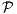

- 856143.
- 341432.
- 432544.
Solution:
(a)28735461(b)23857416(c)52431678
Solution:
Each set contains the integer points
and all integer points that are larger than at least one of these points, and no other point. So the sets are identical.
The most effective formulation is the one with the tightest LP relaxation. The third formulation is the strongest, since it implies the other two relaxations. In particular:
since x3 ≥ 0, and
The second formulation implies the first, so the first is the weakest:
since xi ≥ 0 ∀i.
Given a graph G = (V,E), vertex weights wv, and subsets Ui,i = 1,…,k of the vertices. Find a minimum weight subset W of the vertices such that W contains at least one vertex in each Ui and so that the subgraph of G induced by the vertices in W is connected.
Solution:
Define two sets of binary variables:
Objective function: min∑ v∈V wvxv.
Constraints:
- ∑ v∈Uixv ≥1 for each set Ui, so pick at least one vertex from each set.
- ye ≤ xu for each edge e and each endpoint u of e: an edge can only be in the induced subgraph if both endpoints are selected.
- For each subset S ⊆ V such that
- Ui ⊆ S for some set Ui, and
- Uj ⊆ V \ S for some set Uj,
require
where δ(S) denotes the set of edges with exactly one endpoint in S. This set of constraints enforces connectivity. The construction assumes all weights we > 0. Otherwise, we could pick isolated vertices to improve the overall weight.
Alternative solution:
We can include variables for both vertices and edges, if we link them together:

The third constraint ensures the set of selected edges is acyclic. The second constraint then ensures that we select enough edges to connect the selected vertices. The fourth constraint says we can only pick an edge if we pick both its endpoints.
Solution:
We construct an optimal tour T ⊆ E.
Algorithm:
- Initialize: T = ∅. Let z be the length of the optimal tour on the original graph. Let := z.
- Loop: For e ∈ E:
- Return the tour T of length z.
If there is a unique optimal tour then it is clear that the algorithm will find it. If there are multiple optimal tours then the tour returned depends on the order in which the edges are examined: it will be the last tour lexicographically in the ordering.
It is necessary to leave ce at the modified value in Step 4(b)iiiB because of the potential for multiple optimal tours. For example, if every edge had the same length ce then the algorithm would return T = ∅ if every edge length was reset.
The number of iterations is bounded by |E|, and the work per iteration is bounded by the work of the subroutine plus a constant term.
 P-complete.
P-complete.
Given a graph G = (V,E) and a set L ⊆ V , is there a spanning tree T of G such that the set of leaves is L?
(A leaf of a tree is a vertex of degree 1. The Hamiltonian path problem is: Given a graph G = (V,E), does
there exist a path which visits all the vertices of G exactly once? You may assume that the Hamiltonian path
problem is 
-complete.)
Solution:
The given problem is in NP: easy to check if a set of edges E′ meets the desired criteria.
We polynomially reduce an instance of Hamiltonian path on a graph H = (U,F) to the given problem. Let G = H, so V = U and E = F.
For each pair of vertices {u,v}⊆ U, set L = {u,v}.
Solve the Leaves problem on this graph.
If there exists a spanning tree T of G with leaves L then there exists a Hamiltonian path.
If the answer to the Leaves problem is “No” for every pair {u,v} then there is no Hamiltonian path. The number of calls to the Leaves problem is O(|V |2), which is polynomial.
Alternative reduction:
Introduce two new vertices s, t. Add edges between s and each vertex in V , and between t and each vertex in V . Look for a spanning tree in the new graph with leaves {s,t}. Such a spanning tree exists if and only if there is a Hamiltonian path in the original graph.
Show that this problem is P-complete. (Hint: use node packing or vertex cover.)
Solution:
We use vertex cover with upper bound. Given a graph G = (V,E) and positive integer K, we want to determine whether there exists a vertex cover using no more than K vertices.
Transformation:
- Construct a facility for each vertex v ∈ V with cost fj = 1.
- Construct a customer for each edge e ∈ E. Set cij = 0 if vertex i is an endpoint of edge j, set cij = 2K otherwise.
- Use the same K.
Then there is a solution to the facility location problem if and only if there is a solution to the vertex cover problem.